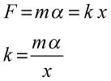
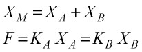
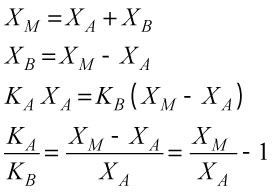

さて，細いガラスを引き延ばして作成したガラスマイクロニードルですが，そのたわみの弾性率をきちんと計っておかなければなりません．
まず，計算から見積もってみましょう．
たわみの弾性率は以下の式で表すことができます．

ここで，
x(L) ： ガラスニードルのたわみ量 [m]
F : ガラスニードル先端にかかる力 [N]
L : ガラスニードルの長さ [m]
E : ガラスのヤング率 [N/m2]
IA : 慣性モーメント [m4]
です．
ここで，慣性モーメントは，断面形状により，円形の場合，

となります．ここで，
a : ガラスニードルの半径 [m]
です．さて，これらの式をフックの法則のように書き直して見ると，

となります．
k : ガラスニードルのたわみの弾性率 [N/m]
あくまでたわみ量が少ない時の計算式ですが．
ここで重要なことは，ガラスニードルのたわみの弾性率は，
直径の４乗に比例
長さの３乗に反比例
する，と言うことです．
つまり，長さが２倍になると弾性率は８倍柔らかくなり，太さが２倍になると弾性は１６倍固くなる，と言うことです．
具体的な値は，ガラスのヤング率を，7.1×1010 Pa，とした場合，
ガラスニードルの長さ： 1 mm
ガラスニードルの直径： 1 um
の場合，弾性率は，
0.167 pN/nm
と言う値となります．
さて，この値はあくまで理論値です．
ガラスニードルを熱して引っ張るのですが，きちんと円柱状になるわけではありません．
普通は，円錐状（非常に長いですが）になってしまいます．
そうなると，理論的計算ではとても追いつきません．
そこで，実際に計ってみなくてはなりません．
たわみの弾性率の見積もり方はいろいろありますが，我々は以下の手法を用いました．
それは，
実際にニードルの先端におもりをつけ，たわみ量を計測する
と言うものです．
具体的に用いたのは，1mあたり，3.8mgの非常に細い鋼線です．
これを実態顕微鏡で観察しながら1mm以下に切り取ります．
その際に，長さをきちんと測っておくことが重要です．
切り取った鋼線を実態顕微鏡の上でＵ字型にピンセットなどで曲げます．
このＵ字型の鋼線を計測用のニードルの先端に乗せ，その際のたわみ量を計測します．
おもりをニードルの先端に乗せる方法は，
計測用のニードルを実態顕微鏡の下で，水平にセットする．
作業用の固いニードルを斜めにセットし，二つのニードルを対面させる
作業用のニードルを操作し，Ｕ字型の鋼線を引っかけて持ち上げる
作業用のニードルを操作し，測定用のニードルに移し替える
変位量は測定用のニードルの先端のフォーカスの変化から見積もる
と言うものです．

ここで，α，は重力加速度[m/s2]，mは鋼線の質量[g]です．
鋼線の質量とガラスニードルのたわみの弾性率との関係は，

この作業を一本のガラスニードルに対して，複数の鋼線で複数回計測して，平均を取ることでたわみの弾性率を見積もります．
これで基準となるガラスニードルが完成します．
しかし，この作業は結構な労力を伴いますし，弾性率の低いガラスニードルの場合，短い鋼線を作成しなくてはなりません．
しかし，短い鋼線は長さの見積もりに誤差を伴います．
そこで，この基準となるガラスニードルを使って，別のガラスニードルの弾性率を見積もりましょう．
その方法は，
基準ガラスニードル（弾性率が既知）と目的のガラスニードル（弾性率が未知）とを倒立顕微鏡上で対面させる
この際の対物レンズは40倍程度
お互いの先端を接触させ，片方のニードルをマニピュレーターで水平に動かす
接触している点は，お互いの弾性率の比に応じてて変位する
この比率と基準となるガラスニードルの弾性率から，計測用のガラスニードルの弾性率を見積もる
と言うものです．
文章で説明するより，図を見てもらう方がわかりやすいでしょう．

このとき，ガラスニードルAの弾性率をKA，Bの弾性率をKBとして，マニピュレータによる変位量をXM,画面上のニードルの先端の変位量をXAとすると，

となります．しかし，ここでニードルBは動かしているので，ニードルBの変位量，XB，は正確には見積もれません．
そこで，式を変形して，

とすれば，マニピュレータの変位量と画面上でのニードルの先端の変位量から，弾性率の比が求まります．
この手法を我々は，Cross Calibration，と呼んでいます，英語的に正しいかは別として．．．
ここで注意しなくてはならないのが，この弾性率の比．
もし，10倍違うとすると，マニピュレータの変位に対する先端の変位が1/10以下，もしくは90％以上になってしまいます．
そうなると，正確な比が求まりにくいので，弾性率の比は，3倍程度にしておくのがいいでしょう．
我々の場合，基準となるニードルは非常に重要なので，
親ニードル
を数本，弾性率にバラエティを持たせて作成しておきます．
その後，Cross Calibrationにより子供ニードルを10本ほど作っておきます．
そして，実際に計測に使うニードルは，この子供から孫ニードルとして作成します．
そうすれば，基準ニードルの10倍，もしくは1/10のニードルのバラエティができますし，親ニードルにバラエティを作っておけば，さらに広範囲の計測用ニードルが作成できます．